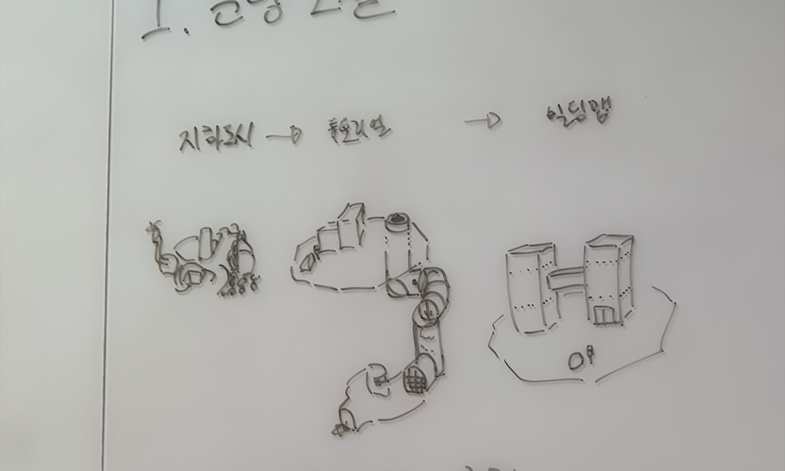
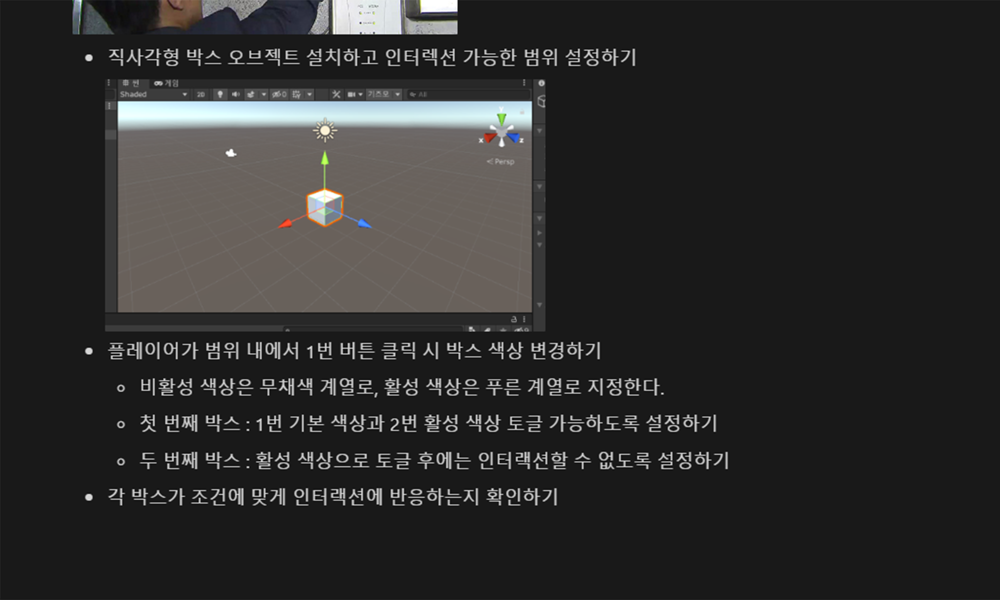

The Bulb Game
#GAME
개요
The Bulb Game은 유니티 엔진을 활용한 3D 3인칭 1인 퍼즐 액션 어드벤처 게임으로, 전기를 다루는 능력을 가진 전구 오브젝트헤드의 주인공이 방출, 순환, 차단 세 가지 기술을 바꿔가며 사용해 퍼즐을 해결하고 보물을 찾으며 멸망한 세계를 여행하는 이야기를 기획하였다. 주인공은 폐허와 극소수의 사람들만이 남은 세상에서 직접 비행기와 열차를 조종해 세상을 탐색하고 흩어져 있는 보물 조각들을 모으거나 기술을 연마하여 강해진다.
젤다의 전설 스카이워드 소드 HD(2021) 및 꿈꾸는 섬(2019), Sky: 빛의 아이들, Stray에서 영감을 받았다.
역할:
총괄 디렉터, 레벨 디자인, UI 디자인
기간:
2023. 08. ~ 2023. 12. (중단)
사용:
Unity
전기,
스팀펑크,
그리고 퍼즐
불현듯 떠오른 아이디어였다. 꿈을 꾸듯 게임의 모습이 눈 앞에 그려졌다. 문명의 멸망으로 각종 기계와 장치의 내부 구조가 적나라하게 드러난 세상에서 전기를 자유자재로 다루는 능력이 있는 주인공은 손을 직접 대거나 손짓만 하면 세상을 거침없이 헤쳐나갈 수 있게 되는 것이다. 전기의 흐름을 조절해 퍼즐을 풀거나, 멈춰버린 탈것을 조종해 앞으로 나아가는 싱글플레이 퍼즐 장르에 어드벤처와 액션 요소를 더해 "정말 재밌게 했다" 하며 플레이를 마무리지을 수 있는 게임을 구상했다.
여행 가서 찍은 사진처럼 머릿속에 남은 장면을 그려내고 난 뒤, 세 가지 전기 기술을 스위치처럼 바꿔가며 사용한다는 메인 기믹을 중심으로 UI를 구성했다. 우선 좌측 상단 영역을 상태 표시 영역으로 설정했다. 체력 바는 특수한 상황에 따라 형태가 변경되어 어떤 상황인지 파악하는 데에 도움을 주도록 했으며, 파악한 상황에 따라 플레이어가 알맞은 능력을 사용할 수 있게 하기 위해 그 아래에 현재 어떤 기술을 사용하고 있는 상태인지 표시했다.
우측 하단 영역은 가이드 영역으로 설정했다. 플레이어에게 방향성을 제시해야 할 상황에서 활용할 수 있는 미니맵을 배치하고 그 위 빈 공간에 잠깐만 등장하는 알림, 피드백 등을 제공하도록 구성했다. 게임 속에서 직접적으로 전달하기 어려운 내용이나 플레이어의 입력에 따른 피드백을 우측에 보여주어 플레이 중 막히는 부분이 생길 때마다 자연스럽게 눈이 가도록 하고자 했다.
아이디어에
아이디어를
더해
함께 게임을 만들 의지가 있는 팀원들을 모아 노션 페이지를 만들고 게임 스케치와 아이디어를 공유한 뒤, 떠오르는 아이디어를 마구잡이로 추가하도록 했다. 챕터의 개념을 대륙으로 나누고, 대륙에 따라 다른 콘셉트를 적용하며, 전기에 영향을 줄 수 있는 날씨 요소를 넣자는 아이디어가 있었다. 시계탑과 같은 거대한 건물 요소를 활용해 스테이지를 넘어가도 배경은 같은 곳임을 인지할 수 있도록 맵을 구성하자는 아이디어가 세계 전체의 구조를 그려내는 데에 큰 도움이 되었다. 또 열기구, 하수구, 건전지, 거미줄 등의 키워드를 조합해 튜토리얼 스테이지를 구성했다.
본격적으로
시작
캐릭터
처음 콘셉트 스케치에서 구상한 캐릭터의 외형을 기반으로 캐릭터 모델링 담당과 캐릭터 시트를 작성했다. 그 과정에서 우비 형태의 망토를 어떻게 움직이고 휘날리게 할지에 대한 기술 공부를 많이 진행했다.
스케치를 기반으로 모델링 작업을 진행했다. 게임 내에서 사용될 애니메이션을 미리 고민하고 이에 맞게 움직일 수 있도록 신경써서 모델링하는 것이 중요했다.
맵
주인공이 모험을 시작하기 전 살고 있던 지하 동네의 구조 스케치(위 2), 물이 흘러들어오는 하수구를 타고 올라가면 나오는 튜토리얼 맵과 거기에 이어지는 챕터 1 전체 스테이지 구성(아래).
학교에서 남는 시간에 모여 하던 프로젝트이다 보니 다들 시간이 부족해 일정이 촉박해지게 되었고, 이에 따라 지상 스테이지를 단일 맵으로 축소하였다. 각 스테이지의 끝에는 지하철 역 입구가 존재하고, 역 안에서 지하철을 조종해 스테이지를 이동한다는 아이디어는 유지하였다.
맵 담당과 함께 화이트보드에 몇 번이고 맵을 같이 그려보면서 서로 이해하고 있는 게 같은지 확인했다. 이에 맞춰 상자를 우선적으로 배치하고 위치를 조정한 뒤 세부 오브젝트를 따로 디자인하였다.
개발
학교 내 인원에는 Unity 사용 경험이 있는 개발 전공 인원이 전무했고, 이에 직접 관련 서적을 구매하고 인터넷을 뒤져 기본 지식을 습득한 뒤 노션에 정리해주었다. 디자인 인원도 알아야 할 기본 사항까지만 회의 시간에 설명해주고 개발 인원에게 가장 기초적이지만 프로젝트에 사용될 요소로 과제를 할당해주었다. 책을 빌려주고 유튜브 강의를 찾아줘도 스스로 학습하기 어려워하는 팀원들에게 내린 특단의 조치였다. 프로그래밍에 관한 공부를 전혀 해본 적 없는 상황에서 개발자들이 이해하기 쉽도록 상황을 제시하는 것이 결코 쉽지 않아 많은 고민을 필요로 했다.
영상
한편 영상 및 애니메이션 담당과는 게임 인트로에 사용될 영상 스토리보드를 고민했다. 아무 대사가 없는 주인공의 감정선과 오로지 카메라 앵글로만 표현되어야 하는 상황을 정확하게 전달하기 위해 컨펌과 토의를 반복했다. 스토리보드가 완성된 뒤에는 맵 담당과 함께 필요한 오브젝트가 무엇이 있는지 파악하고 만들거나 구해야 할 에셋을 정리하는 과정이 있었다.
생각을
통일하고
넘어갑시다
서로 이해하고 있는 게임의 개념도 다르고, 모바일 게임만 접해본 인원도 있는 상황이다 보니 회의 때마다 서로의 이해도를 맞추기 위해 낭비되는 시간이 너무 많았다. 더 효율적인 작업을 위해 리프레시 겸 팀원들이 내가 영감을 받은 게임을 모두들 플레이해볼 수 있고 내가 가진 게임 제작 철학 등을 설명해줄 일종의 미니 세미나 자리를 마련했다. 노트북 두 대와 닌텐도 스위치 두 대를 챙겨와 각각의 자리에 게임을 세팅해두고 팀원들마다 돌아가면서 게임을 플레이해보도록 했다. 플레이를 마친 뒤에 도장판처럼 스티커를 붙이고 본인의 게임 플레이 유형을 알아볼 수 있는 엽서도 준비했다.
게임 체험 후 맛있는 간식도 먹고, 테이블에 둘러 앉아 각 게임에서 느낀 점을 말해보는 시간을 가졌다. 일반 플레이어 입장에서만 보고 있는 팀원들이 게임을 만들어야 하는 입장에서 유심히 봐야 할 요소들을 설명해주고, 짧은 체험 시간에서 놓친 중요한 요소를 직접 시연해주기도 했다. 내가 가진 게임에 대한 경험을 공유해 서로를 더 잘 이해할 수 있게 된 팀원들은 더 심도 있는 고민과 아이디어를 던질 수 있었다.
...그래서?
75일이라는 긴 겨울방학 동안 개발에 몰두하기로 굳게 약속했던 시간은 어디로 갔는지, 글로벌 인턴십 프로그램으로 인한 디렉터와 리드 프로그래머의 부재에 더불어 주어진 작업물과 자율 공부를 진행하기로 한 팀원들의 의욕 상실로 인해 프로젝트는 흐지부지된다.
시간과 실력 모두 부족한 학생의 신분에서 지지해줄 배경 하나 없는 환경의 게임 프로젝트를 끝까지 이끌어가기란 결코 쉬운 일이 아니었다. 아무것도 모르는 상태로도 시작할 수 있다는 마음가짐으로 야심차게 지었던 "맨 땅에 헤딩" 이라는 캐치프레이즈 하나로는 장기적인 의욕을 이끌어낼 수 없었다.
하지만 꼭 결과물을 내놓아야만 좋은 프로젝트는 아니리라. 넘치는 의욕으로 우르르 구매한 서적도, 친구들과 웃고 떠들면서 고민한 게임 기획도, 나름 열심히 정리했던 노션도 모두 남아있다. 하다못해 세미나를 위해 준비한 기획안도 모두 남아있다. 마침표도 없이 끝나버린 The Bulb Game 프로젝트는 아쉽게 막을 내렸지만, 함께 머릿속에만 존재하는 세상을 현실로 끄집어내고 서로 다르게 생각하는 세상의 일부를 공명해가는 과정 하나하나가 소중한 경험으로 남을 것이다.